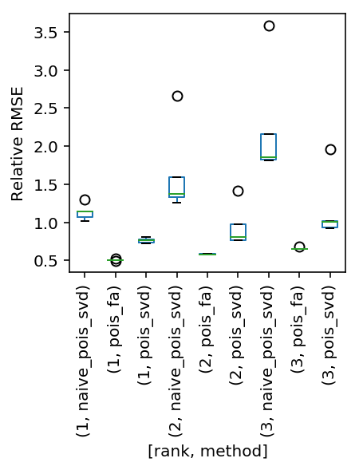
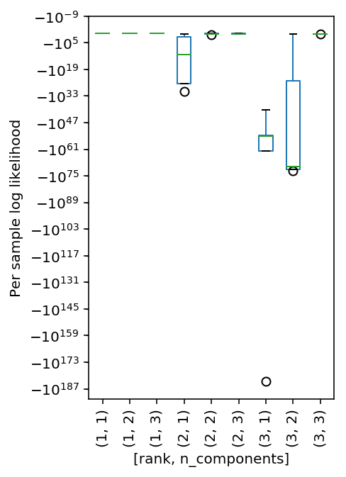

Factor analysis for single cell data
Table of Contents
Introduction
Suppose we want to fit a linear model with heteroscedastic errors:
\[ y \sim N(X \beta, \Sigma) \]
where \(y\) is \(n \times 1\), \(X\) is \(n \times p\), and \(\Sigma = \mathrm{diag}(\sigma^2_1, \ldots, \sigma^2_n)\).
We can estimate \(\beta\) via weighted least squares:
\[ \hat\beta = (X' W X)^{-1} X' W y \]
where \(W = \Sigma^{-1}\).
Now suppose \(y\) is not Gaussian, but we assume a generalized linear model:
\[ \eta = X \beta \]
\[ E[y \mid x] = \mu = g^{-1}(\eta) \]
In this case, we can estimate \(\beta\) via iterative reweighted least squares (Nelder and Wedderbun 1972).
The key idea is to perform approximate Newton-Raphson updates (by approximating the Hessian). Introduce an auxiliary response:
\[ z = \eta + (y - \mu) \left(\frac{\partial \mu}{\partial \eta}\right) \]
and associated weight:
\[ w = \frac{1}{V[y]} \left(\frac{\partial \mu}{\partial \eta}\right)^2 \]
IRLS consists of repeatedly applying the updates:
- Given \(z, w\), update \(\beta \leftarrow (X' W X)^{-1} X' W z\)
- Given \(\beta\), update \(z, w\)
Can we generalize these ideas to perform PCA/factor analysis (Tipping 1999)? Suppose:
\[ x_i = W z_i + \mu_i + \epsilon_i \]
where \(x_i\) is an observed \(p\)-vector, \(z_i\) is a latent \(q\)-vector, and \(q \ll p\).
If we assume \(i = 1, \ldots, n, z_i \sim N(0, 1), \epsilon_i \sim N(0, \sigma^2)\) then the MAP estimates are:
\[ \hat{\mu}_i = \frac{1}{n} \sum_j x_{ij} \]
\[ \hat{\sigma^2} = \frac{1}{p - q} \sum_{j = q + 1}^{p} \lambda_j \]
\[ \hat{W} = U (\Lambda - \sigma^2 I)^{1/2} \]
where \(U, \Lambda\) are the top \(q\) eigenvectors (eigenvalues) of \(X' X\)
If the errors are heteroscedastic, can we generalize the weighted least squares idea to a weighted SVD? Suppose:
\[ X = U D V' + Z + E \]
\[ z_{ij} \sim N(0, s_{ij}^2) \]
\[ e_{ij} \sim N(0, \tau^{-1}) \]
Given \(Z\), the problem becomes PCA of \((X - Z)\) with homoscedastic errors.
Let \(R = X - UDV'\). Then, given \(U, D, V, S, \tau\):
\[ r_{ij} \mid z_{ij} \sim N(r_{ij}, \tau^{-1}) \]
\[ z_{ij} \mid \cdot \sim N(\mu_1, \tau_1^{-1}) \]
\[ \mu_1 = r_{ij} \tau / \tau_1 \]
\[ \tau_1 = \tau + 1 / s_{ij}^2 \]
This idea generalizes the basic iteration in the Soft-Impute algorithm for matrix completion (Mazumder 2010), by representing missing entries as \(s_{ij} = \infty\).
Now suppose the data \(X\) is not Gaussian. Can we generalize IRLS to an iterative reweighted factor analysis, using our weighted SVD? Suppose \(Y\) is the auxiliary response:
- Given \(Y, W\), update \(U, D, V\)
- Given \(U, D, V\), update \(Y, W\)
Implementation
Iterative reweighted factor analysis
def wsvd(x, s, n_components, prior_prec=1, max_iters=10, verbose=False): n, p = x.shape z = np.zeros((n, p)) pca = skd.PCA(n_components=n_components) obj = float('-inf') for i in range(max_iters): u, d, vt = pca._fit(x - z) r = x - np.einsum('ij,j,jk->ik', u, d, vt) posterior_prec = prior_prec + 1 / s ** 2 z = r * prior_prec / posterior_prec update = st.norm(scale=np.sqrt(s ** 2 + 1 / prior_prec)).logpdf(r).mean() if verbose: print(f'wsvd [{i}] = {update}') if update < obj or np.isclose(update, obj): return u, d, vt else: obj = update raise RuntimeError('failed to converge') def pois_llik(y, lam): return y * np.log(lam) - lam - sp.gammaln(y + 1) def exp(x): """Numerically safe exp""" return np.exp(np.clip(x, 0, 700)) def pois_svd(x, max_outer_iters=10, verbose=False, **kwargs): mu = x.mean(axis=0, keepdims=True) * np.ones(x.shape) eta = np.log(mu) obj = float('-inf') for i in range(max_outer_iters): y = eta + (x - mu) / mu w = 1 / mu u, d, vt = wsvd(y, w, verbose=verbose, **kwargs) eta = np.einsum('ij,j,jk->ik', u, d, vt) mu = exp(eta) update = pois_llik(x, mu).mean() if verbose: print(f'pois_svd [{i}] = {update}') if update < obj or np.isclose(update, obj): return u, d, vt else: obj = update raise RuntimeError('failed to converge')
First order optimization
Directly optimize the log likelihood via gradient descent:
\[ x_{ij} \sim Poisson(\lambda_{ij}) \]
\[ \lambda_{ij} = \sum_k L_{ik} F_{kj} \]
For simplicity, don't put any constraints on \(L, F\).
import torch class PoissonFA(torch.nn.Module): def __init__(self, n_samples, n_features, n_components): super().__init__() self.l = torch.randn([n_samples, n_components], requires_grad=True) self.f = torch.randn([n_components, n_features], requires_grad=True) def forward(self, x): log_lam = torch.matmul(self.l, self.f) return -torch.mean(x * log_lam - torch.exp(log_lam) + sp.gammaln(x + 1)) def fit(self, x, max_epochs=1000, verbose=False, **kwargs): x = torch.tensor(x, dtype=torch.float) opt = torch.optim.Adam([self.l, self.f], **kwargs) for i in range(max_epochs): opt.zero_grad() loss = self.forward(x) if verbose and not i % 100: print(f'Epoch {i} = {loss}') loss.backward() opt.step() return self def pois_fa(x, n_components, **kwargs): n, p = x.shape res = PoissonFA(n, p, n_components).fit(x, max_epochs=2000, lr=5e-2) return res.l.detach().numpy(), np.ones(n_components), res.f.detach().numpy()
Naive factor analysis
The naive approach would be to compute the Poisson MLE \(\hat\lambda_{ij}\) once and then factorize the resulting matrix. But without further assumptions, the MLE is \(\hat\lambda_{ij} = x_{ij}\)
def naive_pois_svd(x, n_components, **kwargs): return skd.PCA(n_components=n_components)._fit(x)
Simulation
Generate a Poisson data matrix assuming the rate matrix is low rank. Evaluate the quality of the fit using RRMSE.
def simulate(num_samples, num_features, rank, seed=None): if seed is None: seed = 0 np.random.seed(seed) l = np.random.normal(scale=0.7, size=(num_samples, rank)) f = np.random.normal(scale=0.7, size=(rank, num_features)) lf = l.dot(f) e = np.random.normal(scale=lf.std(), size=(num_samples, num_features)) x = np.random.poisson(lam=np.exp(lf + e)) return x, lf def reconstruct(res): return np.einsum('ij,j,jk->ik', *res) def rrmse(pred, true): return np.sqrt(np.linalg.norm(pred - true) / np.linalg.norm(true))
Test the simulation framework.
x, lf = simulate(num_samples=100, num_features=1000, rank=1, seed=0)
res = pois_svd(x, n_components=1)
rrmse(reconstruct(res), lf)
0.7758305792529097
Compute the naive estimate.
rrmse(reconstruct(naive_pois_svd(x, 1)), lf)
1.1425364246860807
Evaluate the methods systematically.
def evaluate(num_trials=10): result = [] for rank in range(1, 4): for n_components in range(1, 4): for method in (pois_svd, pois_fa, naive_pois_svd): for trial in range(num_trials): try: x, lam = simulate(num_samples=100, num_features=1000, rank=rank, seed=trial) res = method(x, n_components=n_components, max_outer_iters=1000, max_iters=1000) rrmse_ = rrmse(reconstruct(res), lam) llik = pois_llik(x, np.exp(reconstruct(res))).mean() except: rrmse_ = None llik = None result.append((rank, trial, method.__name__, n_components, rrmse_, llik)) result = pd.DataFrame(result) result.columns = ['rank', 'trial', 'method', 'n_components', 'rrmse', 'llik'] return result
result = evaluate(num_trials=5)
Serialize the results.
result.to_csv('pois-svd-simulation.txt.gz', sep='\t', compression='gzip')
Read the results.
result = pd.read_table('pois-svd-simulation.txt.gz', index_col=0)
plt.clf() result[result['rank'] == result['n_components']].boxplot(column='rrmse', by=['rank', 'method'], figsize=(3, 3), grid=False, rot=90) plt.ylabel('Relative RMSE') plt.title('') plt.suptitle('')
Text(0.5,0.98,'')

Does the WSVD reveal the underlying rank?
plt.clf() result[result['method'] == 'pois_svd'].dropna().boxplot(column='llik', by=['rank', 'n_components'], figsize=(3, 5), grid=False, rot=90) plt.ylabel('Per sample log likelihood') plt.yscale('symlog', linthreshy=1e-14) plt.title('') plt.suptitle('')
Text(0.5,0.98,'')

For each data set, how often does the model with number of components equal to the ground truth have the highest likelihood?
(result[result['method'] == 'pois_svd'] .groupby(['rank', 'trial']) .apply(lambda x: x.loc[x['llik'].idxmax, 'n_components']) .reset_index())
rank trial 0 0 1 0 1 1 1 1 1 2 1 2 1 3 1 3 1 4 1 4 1 5 2 0 2 6 2 1 2 7 2 2 3 8 2 3 2 9 2 4 2 10 3 0 3 11 3 1 3 12 3 2 3 13 3 3 3 14 3 4 3
Application to single cell data
What are the latent factors we expect to find in single cell data?
- Unwanted variation
- Cell types/subpopulations
Of these, cell types are of the most interest, because we can then read off the relevant genes from the factors.
To test whether the method recovers cell type, we use known mixtures of sorted PBMCs from 10X Genomics.
b_cells = si.mmread('/project2/mstephens/aksarkar/projects/singlecell-ideas/data/10xgenomics/cd19+_b_cells/filtered_matrices_mex/hg19/matrix.mtx') t_cells = si.mmread('/project2/mstephens/aksarkar/projects/singlecell-ideas/data/10xgenomics/cd8+_cytotoxic_t_cells/filtered_matrices_mex/hg19/matrix.mtx')
genes = pd.read_table('/project2/mstephens/aksarkar/projects/singlecell-ideas/data/10xgenomics/cd19+_b_cells/filtered_matrices_mex/hg19/genes.tsv', header=None)
b_cell_subset = b_cells.tocsc()[:,:500] t_cell_subset = t_cells.tocsc()[:,:500] mix = ss.hstack([b_cell_subset, t_cell_subset], format='csr') keep = (mix.sum(axis=1) > 0).A.ravel() genes = genes.loc[keep] mix = mix[keep].A.T mix /= mix.sum(axis=1, keepdims=True)
res = pois_svd(mix, n_components=10, verbose=True)
2 - 8b2e7d2c-614d-46bb-aaff-4a9a5a4420d0
res0 = skd.PCA(n_components=10).fit(mix)
Y = np.zeros(mix.shape[0]) Y[:mix.shape[0] // 2] = 1 m0 = sklm.LogisticRegressionCV(fit_intercept=True).fit(res0.transform(mix), Y) m0.coef_
array([[ 5.53867438e-04, -1.16538042e-04, 1.97613135e-05, -7.26492033e-06, -8.97671870e-06, 6.80991734e-06, -3.30404299e-06, 1.02224040e-05, -2.31100318e-06, 7.68760237e-07]])
m0.score(res0.transform(mix), Y)
1.0
scaler = skp.StandardScaler() m1 = sklm.LogisticRegressionCV(fit_intercept=True).fit(scaler.fit_transform(mix), Y) m1.score(scaler.transform(mix), Y)
1.0